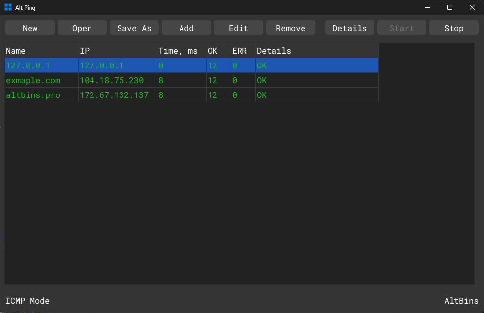

AltPing
Network ping utility with latency stats
Description
AltPing is a small GUI app for checking whether a list of hosts is reachable. Add hosts by name or IP, click Start, and it pings each one in a loop over ICMP, showing round-trip time in milliseconds and running OK/error counts per host. You can keep several host lists and switch between them quickly, and every action has a keyboard shortcut.
Download
Source code
Screenshots
